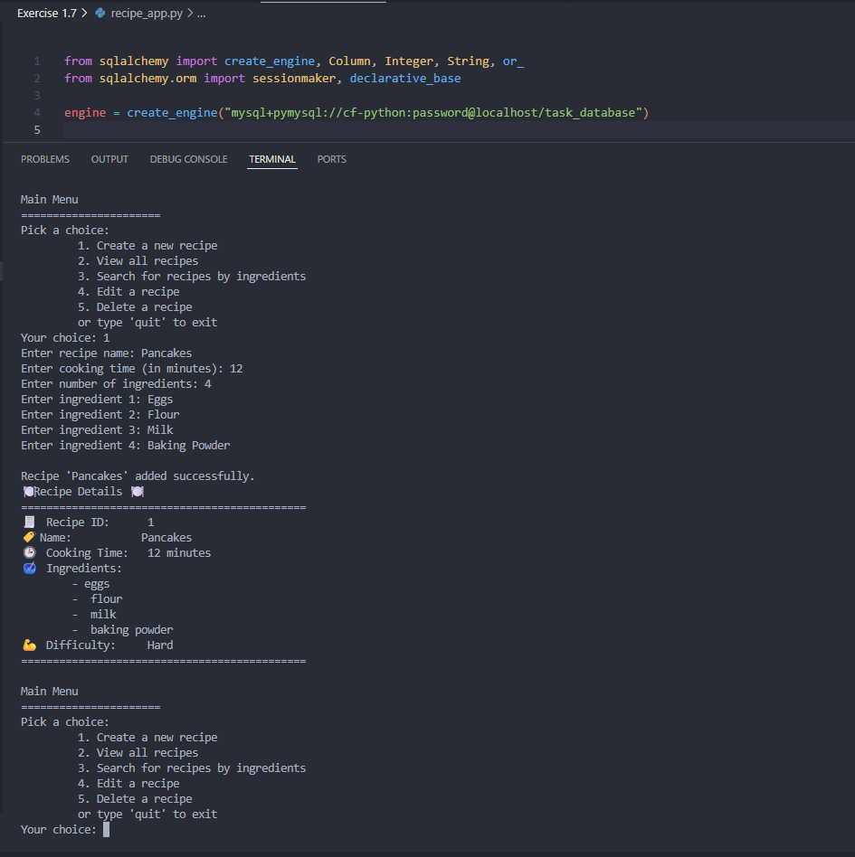

THE RECIPE APP — A DJANGO RECIPE MANAGEMENT APP

Objective
Build a scalable, data-driven recipe management application using Python and Django, starting from a command-line foundation and evolving into a full web application with authentication, search, and analytics features.
Role: Full-stack developer
Duration: 4 weeks
Tech: Python, Django, PostgreSQL (Neon), SQLite, Pandas, Gunicorn, WhiteNoise, Heroku
The Challenge
How can users efficiently create, search, and analyze recipes within a secure, scalable web application while maintaining clean architecture and strong data integrity?
Additionally, how can a simple command-line CRUD application evolve into a production-ready web platform?
The Process
Phase 1 – Command-Line Foundation
- Built a CRUD application using Python
- Managed recipe and user data with SQLite (local development)
- Implemented object-oriented programming with Python classes and methods
- Added input validation and error handling
Challenge: Handling data conversions between different formats (objects, lists, strings)
Solution: Structured class design, data normalization, and step-by-step validation logic
Phase 2 – Django Web Application
- Built the application using Django 5.2 and Python 3.14.3
- Designed models for recipes and users, connected to PostgreSQL (production) and SQLite (development)
- Implemented authentication and protected views using Django’s built-in auth system
- Developed full CRUD functionality for recipes
- Created dynamic ModelForms to add, edit, and validate recipes
- Applied class-based views and templates for frontend rendering
- Converted QuerySets to Pandas DataFrames for analytics and chart visualizations
- Wrote automated tests for models and views using Django’s TestCase
- Deployed the web app on Heroku with Gunicorn as the WSGI server and WhiteNoise for static files
Challenge: Structuring models, views, and analytics for scalability
Solution: Leveraged Django’s class-based views, ORM, and clear separation of business logic, forms and templates

Final Solution
The final application allows users to:
- Register and log in securely
- Create, view, edit, and delete recipes
- Search recipes using multiple filters
- Access recipe analytics and visual reports
- Manage their profile and password
Results & Learnings
- Delivered a complete Django web application deployed to production
- Strengthened understanding of MVT architecture and ORM usage
- Gained experience with authentication and protected routes
- Learned how to combine backend querying with data analysis tools
Looking back:
Starting with a CLI app helped me structure models and logic before moving to Django. I focused on clean code, usability, and reusable components.
I grew particularely comfortable with:
- Structuring models and class-based views
- Implementing authentication and user flows
- Designing scalable search functionality
The most delicate part was handling data transformations and understanding how output types evolve through different layers of the application. Taking a step back to analyze data flow before implementing features became a key habit that improved both clarity and code quality.
Next steps: Improve UI/UX and accessibility, expand the database with recipes' steps